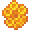

PollinationHow seed is made
Each seed takes one copy of every gene from its mother, and one from the father whose pollen set it, by chance.
mother (12, 4) × father (10, 6)
Each square is one chance in four.
Self-pollinators
Wheat, beans, tomatoes and chillies pollinate themselves. A neighbour's pollen gets in only now and then.
Their lines stay pure easily.
Wind and insects
The wind crosses corn and beetroot: nearly every plant takes a neighbour's pollen.
Insects cross these, about half the time; with bees near, nearly always.
Keeping lines apart
| Crop | Reach | Bees |
|---|---|---|
| Corn | 4 | 4 |
| Beetroot | 3 | 3 |
| Squash | 3 | 5 |
| Cabbage, onion | 2 | 4 |
| Carrot, turnip | 2 | 4 |
| Giant pumpkin | 6 | 8 |
| Selfers | 1 | 3 |
Pollen travels this many blocks. Grow lines further apart to keep them pure.
Clones
Potatoes, garlic and sweet potatoes grow from the plant itself: the same plant again.
Now and then a clone sports: one gene shifts on its own.
A potato left to go to seed gives true seed you can cross.
Bees
Bees, or a hive within 16 blocks, carry pollen two blocks further and far more often.
For pure seed, keep insect-crossed lines away from the hives.